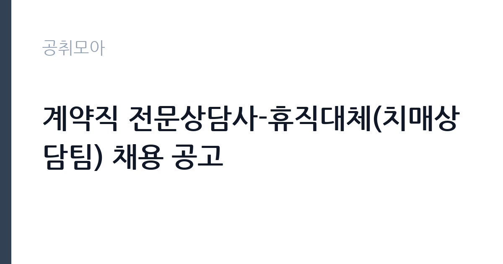

[공공기관] 계약직 전문상담사-휴직대체(치매상담팀) 채용 공고
국립중앙의료원 · 서울 · 마감 2026-11-18 (D-14) · 출처 잡알리오

한눈에 보는 모집 조건
| 기관 | 국립중앙의료원 |
|---|---|
| 공고명 | 계약직 전문상담사-휴직대체(치매상담팀) 채용 공고 |
| 고용형태 | 기간제 |
| 근무지 | 서울 |
| 게시일 | 2026-11-04 |
| 마감일 | 2026-11-18 (D-14) |
지원자격, 이렇게 읽으세요
- 다음 자격(면허) 중 1가지 이상 취득 후 3년 이상 근무경력이 있는 자
- 교대 근무 가능한 자(07:00~16:00 / 13:00~22:00 순환근무)
- 치매업무 관련 근무 경력자
기간제 근로자는 근로계약 기간이 정해진 신분입니다. 계약 기간과 갱신 가능 여부가 근로계약서에 명시되며 기간 만료 시 근로관계가 종료됩니다. 결원 보충이나 특정 사업 기간에 맞춰 채용되는 경우가 많아 업무 범위가 명확합니다. 이번 공고는 국립중앙의료원이 직접 진행하는 자체 전형입니다. 이 공고는 사회복지사 1급, 간호사, 정신건강전문요원 2급 이상 가운데 하나를 취득한 뒤 3년 이상 근무 경력이 있는 사람을 요구합니다. 교대 근무가 가능해야 하며, 치매 업무나 상담 업무 경력, 치매 관련 연구 참여 경험, 보건복지 분야 데이터 관리 경험이 있으면 우대합니다. 우대 조건은 입사지원서 경력 기술란에 상세히 적어야 반영됩니다. 휴직대체 계약직이므로 계약 기간이 정해져 있고, 근무 종료 시점을 미리 확인해야 합니다. 동점자 처리 기준이 공고문에 있으니 배점 항목을 미리 확인해 두십시오. 우대 사항에 해당하면 증빙을 반드시 첨부해야 하며, 누락하면 가점 없이 평가됩니다. 자격증은 유효 기간과 등록 상태를 확인해야 합니다. 갱신이 필요한 자격이라면 갱신 여부를 먼저 점검하십시오. 이 공고 원문에 적힌 응시 조건 문구는 '다음 자격(면허) 중 1가지 이상 취득 후 3년 이상 근무경력이 있는 자' / '치매업무 관련 근무 경력자' / '상담업무 관련 근무 경력자'입니다. 문구를 그대로 읽고 본인 해당 여부를 하나씩 표시해 두면 서류 단계에서 탈락하는 일을 줄일 수 있습니다.
이 공고의 포인트
이 건은 국립중앙의료원이 같은 시기에 낸 13개 모집분야 가운데 치매 전문상담(휴직대체) 직무입니다. 다른 직무 공고와 요건이 다르므로 지원 전에 모집분야 표를 대조해야 합니다. 이 공고의 첫 번째 포인트는 고용 형태입니다. 계약 기간이 정해져 있어 근무 종료 시점이 명확합니다. 그만큼 짧은 기간에 어떤 실적을 남길지가 중요해집니다. 두 번째는 업무 범위가 명확하다는 점입니다. 치매 전문상담(휴직대체) 직무로 채용되므로 배치 이후 담당 업무가 크게 흔들리지 않습니다. 세 번째는 근무지입니다. 서울 지역 근무로 접근성은 좋지만 그만큼 지원자가 몰리는 지역이므로 경쟁률을 넉넉히 잡아야 합니다. 모집 인원이 적은 만큼 지원자 한 명 한 명의 서류 완성도가 당락에 크게 작용합니다. 선발 인원은 공고문에 명시되어 있으니 모집분야 항목을 함께 확인하십시오.
전형은 어떻게 진행되나
전형은 서류심사와 면접심사를 기본으로 하고 직무에 따라 필기나 실기, 체력검정이 추가됩니다. 서류 단계에서는 응시자격 충족 여부와 제출서류 형식을 확인하며 이 단계에서 탈락하는 지원자가 적지 않습니다. 면접은 직무 이해도와 경험을 확인하는 방식으로 진행되고 발표는 개별 통보나 홈페이지 게시로 이뤄집니다. 최종합격 이후에는 결격사유 조회와 채용 신체검사가 이어지며 이 절차에서 문제가 확인되면 합격이 취소될 수 있습니다. 구체적인 전형 단계와 배점은 공고문에 표로 정리되어 있으니 원문을 기준으로 준비하십시오. 온라인 접수는 마감 시각이 분 단위로 정해지므로 시스템 시간을 기준으로 판단해야 합니다.
원문에서 확인한 전형 방식
[필수] 아래의 조건을 모두 충족하는 자 ·다음 자격(면허) 중 1가지 이상 취득 후 3년 이상 근무경력이 있는 자 - 사회복지사 1급, 간호사, 정신건강전문요원 2급 이상 ·교대 근무 가능한 자(07:00~16:00 / 13:00~22:00 순환근무) [우대] ·치매업무 관련 근무 경력자 ·상담업무 관련 근무 경력자 ·치매 관련 논문 작성 또는 연구 참여 경험자 ·보건복지 분야 데이터 관리 업무 경험자
이런 분께 추천해요
- 사회복지사 1급·간호사·정신건강전문요원 2급 이상 자격과 3년 이상 경력이 있는 분
- 순환 교대 근무가 가능한 분
- 짧은 인수인계 기간에 업무를 익힐 수 있는 분
지원 전 체크리스트
- 응시자격 요건과 경력 기준을 충족하는가 — 경력은 증명서로 입증해야 합니다
- 계약 기간과 근무 시작일·종료일을 확인했는가
- 제출서류 목록을 모두 준비했는가 — 누락 시 서류 단계에서 탈락합니다
- 접수 마감 2026-11-18 이전에 접수 방식을 확인해 제출했는가
모집 일정과 제출 타이밍
공고 게시일은 2026-11-04, 접수 마감은 2026-11-18입니다. 준비 기간은 약 14일로 서류 준비와 자격 증빙을 함께 처리하기에는 넉넉하지 않은 편입니다. 첫 이틀 안에 공고문과 첨부 서식을 내려받아 요건을 확인하고 남은 기간에 증빙 서류를 발급받는 일정이 현실적입니다. 면접은 서류 합격자 발표 후 짧은 간격으로 진행되는 경우가 많으므로 서류 제출과 동시에 면접 준비를 시작하는 편이 안전합니다. 마감일에는 접수 시스템이 몰리므로 하루 전까지 제출을 마치는 것이 좋습니다. 서류 발표일과 면접일 사이가 짧은 경우가 많아 면접 준비는 접수와 동시에 시작하는 편이 좋습니다.
직무 이해하기: 공공기관
국립중앙의료원 치매상담팀의 휴직대체 전문상담사는 치매 환자와 가족 상담을 맡습니다. 상담 전화와 대면 상담으로 환자의 상태와 돌봄 여건을 확인하고, 필요한 서비스를 연결합니다. 치매안심센터와 지자체, 의료기관 사이의 연계를 조정하고 상담 기록을 관리합니다. 검진과 등록 사업의 대상자 발굴과 사후 관리도 업무에 포함됩니다. 휴직자의 업무를 인수받는 자리라 인수인계 기간이 짧고, 근무는 07시부터 16시, 13시부터 22시까지 순환하는 교대제입니다. 업무 강도와 근무 시간대는 부서 배치에 따라 달라지므로 면접에서 확인하는 것이 가장 정확합니다.
자기소개서 작성 팁
지원서는 자격 취득 이후의 상담·사례관리 경력을 기간과 대상별로 정리하는 것이 핵심입니다. 상담 건수와 연계한 기관, 운영한 프로그램을 구체적으로 제시하십시오. 짧은 계약 기간에 업무 공백을 만들지 않겠다는 의지와 인수인계 계획을 한 문단 넣으면 신뢰를 얻습니다. 치매·노인 복지 분야 경험은 가장 앞에 배치하십시오. 직무 경험이 많지 않다면 경험의 양보다 과정을 구체적으로 쓰는 편이 낫습니다. 어떤 상황에서 무엇을 판단했고 어떤 결과가 나왔는지 순서대로 서술하면 신뢰가 생깁니다. 지원 동기와 기여 방안은 한 문단씩 짧게 유지하고, 가장 자신 있는 경험에 분량을 몰아주십시오. 마지막 문장은 포부보다 구체적인 실행 계획으로 끝내는 것이 좋습니다.
면접 준비 포인트
면접에서는 상담 실무와 교대 근무 적응을 확인합니다. 서비스를 거부하는 가족을 어떻게 설득할지, 위기 상황에서 어떤 기관과 연계할지 묻습니다. 휴직자의 업무를 짧은 기간에 인수받아야 하므로 인수인계 경험이나 업무 정리 방식도 질문 대상입니다. 자격과 경력 요건이 엄격하므로 증명서상 경력 기간을 정확히 숙지하십시오. 면접은 공고문에 적힌 직무 내용을 얼마나 이해하고 있는지 확인하는 질문으로 시작하는 경우가 많으니, 모집분야 문구를 그대로 읽어 두는 것이 도움이 됩니다. 모르는 질문에 추측으로 답하면 감점 요인이 되므로, 확인 후 답하겠다고 밝히는 편이 안전합니다.
급여·근무조건 읽는 법
국립중앙의료원은 알리오 2025년 결산 공시 기준 일반정규직 1인당 평균보수 7,865만원, 공시된 신입사원 초임 3,751만원입니다. 이번 공고는 휴직대체 계약직이라 위 정규직 평균보수가 그대로 적용되지 않고, 병원의 계약직 임금 기준과 계약 기간에 따라 보수가 정해집니다. 교대 근무 수당 포함 여부를 공고문에서 확인하십시오. 2026년 적용 최저임금은 시급 10,320원, 월 환산 2,156,880원(주 40시간·209시간 기준)입니다. 고용노동부 고시 제2025-47호로 확정된 금액입니다. 공고문에 금액이 제시되지 않은 항목은 원문 보수표나 처우 설명에서 확인해야 하며 확인되지 않은 수치는 쓰지 않는 것이 원칙입니다. 비교할 때는 월 급여뿐 아니라 상여·명절휴가비·복지포인트·초과근무수당까지 포함한 연간 총액으로 계산하십시오. 기간제라면 계약 기간 동안의 총액을, 무기계약이라면 호봉 상승과 정년까지의 누적 소득을 기준으로 판단하는 편이 정확합니다.
자주 묻는 질문
- 선발 인원은 몇 명인가요?
공고문의 모집분야 항목에 직종별 인원이 표로 제시되어 있습니다. 첨부된 공고문 원문에서 확인하십시오. - 근무지는 어디인가요?
서울 지역의 국립중앙의료원 소속 근무지입니다. 세부 주소와 출퇴근 조건은 원문 공고문에서 확인할 수 있습니다. - 보수는 얼마인가요?
채용 신분(기간제)과 기관 임금 규정에 따라 정해지며 구체적인 금액은 공고문 처우 항목에 제시됩니다. 금액이 공개되지 않은 경우에는 원문의 보수표를 확인하십시오.
함께 보면 좋은 공고
[공공기관] 한국농어촌공사 영산강사업단 공무직(청소원) 보훈 장애 제한경쟁 채용공고 — 마감 2026-11-20[공공기관] 2027년 1차 박사후연수연구원, 석사후연수연구원 및 위촉연구원 공개채용 — 마감 2026-11-20[공공기관] 서울대학교치과병원 2027년 상반기 정규직(원무직) 채용 공고 — 마감 2026-11-18출처: 잡알리오 공개정보를 바탕으로 공취모아가 정리한 안내글입니다. 모집 조건·일정은 변경될 수 있으니 지원 전 반드시 원문 공고문을 확인하세요. 본 글은 정보 제공용이며 합격을 보장하지 않습니다.